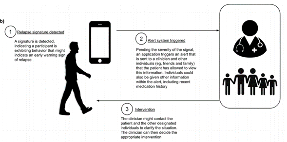

Los trastornos del espectro de la esquizofrenia (SSD) son afecciones crónicas, pero la gravedad de las experiencias sintomáticas y las deficiencias funcionales vacilan a lo largo de la enfermedad. El desarrollo de sistemas de monitoreo remoto discretos para detectar signos de alerta temprana de recaídas sintomáticas inminentes permitiría a los médicos intervenir antes de que la condición del paciente empeore
Objetivo del estudio es crear los primeros modelos, utilizando exclusivamente datos de detección pasiva desde un smartphone, para predecir anomalías de comportamiento que podrían indicar signos de alerta temprana de una recaída psicótica.
Los datos utilizados para entrenar y probar los modelos se recopilaron durante el estudio CrossCheck.
El sistema CrossCheck era una aplicación para Android combinada con una plataforma de recopilación y almacenamiento de datos basada en la nube. La aplicación recopiló continuamente los datos de detección pasiva de los usuarios y pidió a los participantes cada 2 a 3 días que informara a los EMAs para realizar un seguimiento de los síntomas positivos y negativos de los SSD.
Los datos conductuales recopilados con sensores pasivos de teléfonos inteligentes ofrecen métodos discretos para medir trayectorias de salud mental y enfermedades mentales.
El sistema combina la detección pasiva con mediciones de encuestas auto informadas cada tres semanas. Con CrossCheck, los investigadores pudieron predecir las evaluaciones ecológicas momentáneas (EMA) autoinformadas por el paciente a partir de datos de detección pasiva y combinar tanto la detección pasiva como los datos autoinformados para predecir las puntuaciones de la Escala de calificación psiquiátrica breve (BPRS) administrada por el médico.
Un total de 1367 individuos fueron evaluados inicialmente para la elegibilidad y 149 fueron inscritos en el estudio. Las personas elegibles que no se inscribieron ya no recibían atención en el hospital, no cumplían con los criterios de diagnóstico, no querían participar o no cumplían con los criterios de gravedad. De las 149 personas inscritas, 62 se asignaron al azar al grupo de teléfonos inteligentes del estudio. Los participantes incluidos en este trabajo debían haber tenido al menos 10 DRH (días relativos de salud) recogidos por la aplicación para teléfonos inteligentes. A los participantes inscritos en el estudio se les dio un teléfono inteligente Android durante 12 meses.
Los datos utilizados para entrenar y probar los modelos se recopilaron durante el estudio CrossCheck. Las características por hora derivadas de los datos de detección pasiva de teléfonos inteligentes se extrajeron de 60 pacientes con SSD (42 no recaídas y 18 recaídas>1 veces a lo largo del estudio) y se utilizaron para entrenar modelos y probar el rendimiento.

La principal limitación de este estudio fue el tamaño limitado de la muestra. La mayoría de los participantes no recayeron en varios puntos a lo largo del estudio y no pudimos evaluar si las características subyacentes de las anomalías eran consistentes con la recaída para esos participantes.